掌中宝交易 OMS
掌中宝交易OMS是一款面向淘宝 / 天猫中小商家的轻量化订单管理 SaaS。我作为产品负责人，主导产品从 0-1 构建到规模化增长，围绕订单履约主链路完成产品定位、核心链路优化、复杂业务抽象、差异化机会挖掘与商业化体系建设，最终实现 60W+ 用户、7.3W+ 付费用户、12% 转化率和 65% 续费率。
60W+用户
7.3W+付费用户
65%续费率
掌中宝交易OMS是一款面向淘宝 / 天猫中小商家的轻量化订单管理 SaaS。我作为产品负责人，主导产品从 0-1 构建到规模化增长，围绕订单履约主链路完成产品定位、核心链路优化、复杂业务抽象、差异化机会挖掘与商业化体系建设，最终实现 60W+ 用户、7.3W+ 付费用户、12% 转化率和 65% 续费率。
01 / Product Overview
中小商家并不一定需要完整 ERP，但他们每天都需要高效、稳定、低成本地处理订单。
在项目早期，我观察到市场存在明显断层：一类是重ERP/ 重OMS系统，能力完整，但实施成本高、学习成本高、价格门槛高，并不适合大量中小商家快速上手；另一类是平台基础工具，操作简单，但在复杂订单处理、多物流、多售后、多店铺、多包裹等场景下能力不足。
因此，掌中宝交易的核心定位不是做"大而全 ERP"，而是围绕商家履约链路建立的一套轻量OMS系统。让中小商家在一个低学习成本的工具里完成日常订单处理，同时保留足够的业务深度来支持复杂经营场景。
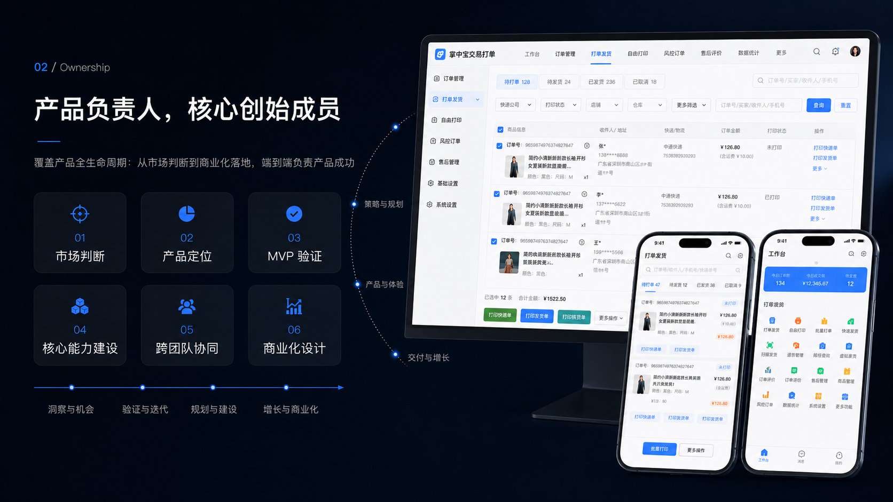
02 / Ownership
我在项目中承担产品负责人角色，是掌中宝交易的核心创始成员之一。
我的职责覆盖产品全生命周期：从市场判断、产品定位、MVP 验证，到搜索筛选、订单列表、拆合单、虚拟商品自动发货等核心能力建设；同时负责版本规划、优先级决策、跨团队协同和商业化体系设计。
03 / Personas & Use Cases
核心用户：新手/小商家，中小规模商家，多店铺/多品类商家，垂直类目商家等
用户痛点
| 痛点 | 具体表现 | 产品机会 |
|---|---|---|
| 找单慢 | 订单量多，搜索效率低 | 搜索筛选重构、批量搜索、快捷搜索 |
| 信息复杂 | 订单列表信息分散，判断决策时间成本高 | 订单列表重构、提高信息透传 |
| 操作复杂 | 打单、备注、复制、发货等动作分散 | 固定操作区、批量操作、常用操作配置 |
| 复杂履约难 | 多商品、多包裹、同买家多单、预售现货混合 | 拆单、合单、一单多包、库存校验 |
| 售后问题多 | 退款、退货、换货与发货流程交织 | 售后逆向分支，主线与异常分离 |
| 免费化冲击 | 平台基础能力增强，第三方工具价值被稀释 | 做平台覆盖不到的细分高价值能力 |
04 / Strategy
以订单履约为主链路，以效率提升为核心价值，以自动化与差异化场景作为付费增长点，构建面向中小商家的轻量 OMS。
0-1 阶段：先验证高频刚需
围绕最核心的订单处理链路构建：订单同步、订单列表、搜索筛选、状态机管理、批量处理、打单发货、物流跟踪、基础售后协同。
成长期：优化核心链路，提升转化。
重点放在搜索筛选、订单列表、批量操作、打单发货和拆合单能力，让商家在日常处理订单时更快、更稳、更少出错。
成熟期：寻找差异化付费点
将重点转向商家付费意愿明确的细分场景，例如虚拟商品自动发货、自动化提醒、个性化配置等。
商业化：免费引流+分层付费。
免费版：覆盖基础订单查看与基础处理。黄金版：面向有订单规模、追求效率的商家，提供批量处理、打单发货、订单筛选等能力。白金版：面向高频使用和自动化需求强的商家，提供高阶自动化、差异化能力与更强履约支持。
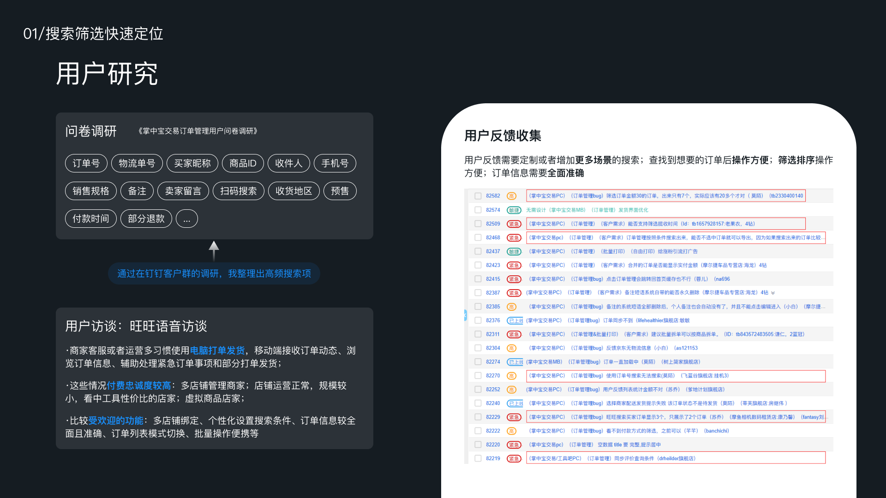

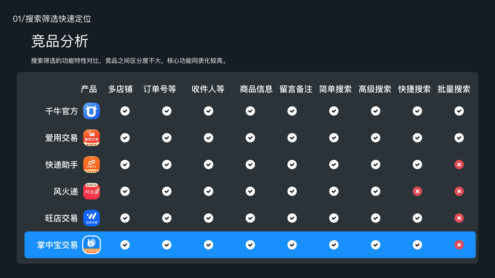
05 / System Thinking
为复杂履约设计清晰的业务系统
OMS的难点不在于展示订单列表，而在于平台订单、包裹、库存、物流、售后和退款之间存在复杂关系。我通过单据流转和订单状态机关系，将履约主线与售后异常分支拆开，使系统既能支持复杂场景，又能保持商家侧高效操作。
订单状态机：待付款、待发货、部分发货、已发货、退款中、待评价、已完成、已关闭
订单管理主线：
消费者下单 → 平台订单创建 → 掌中宝同步待付款订单 → 付款后进入待发货池 → 订单校验与拦截 → 拆合单与配仓 → 批量打单：发货单/快递单/拣货单 → 拣货/验货/复核 → 发货 → 物流跟踪 → 平台状态更新 → 签收 / 交易成功 → 财务与数据看板
其中售后、退款、退货入库与异常预警作为底部分支沉淀，不干扰履约主线。
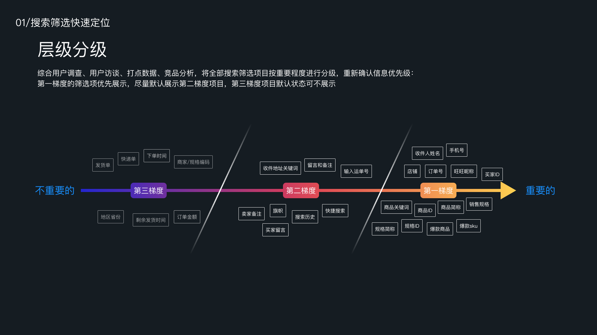
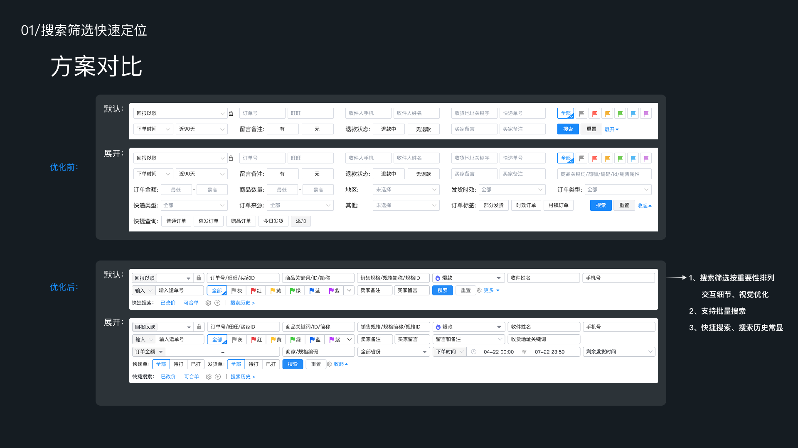
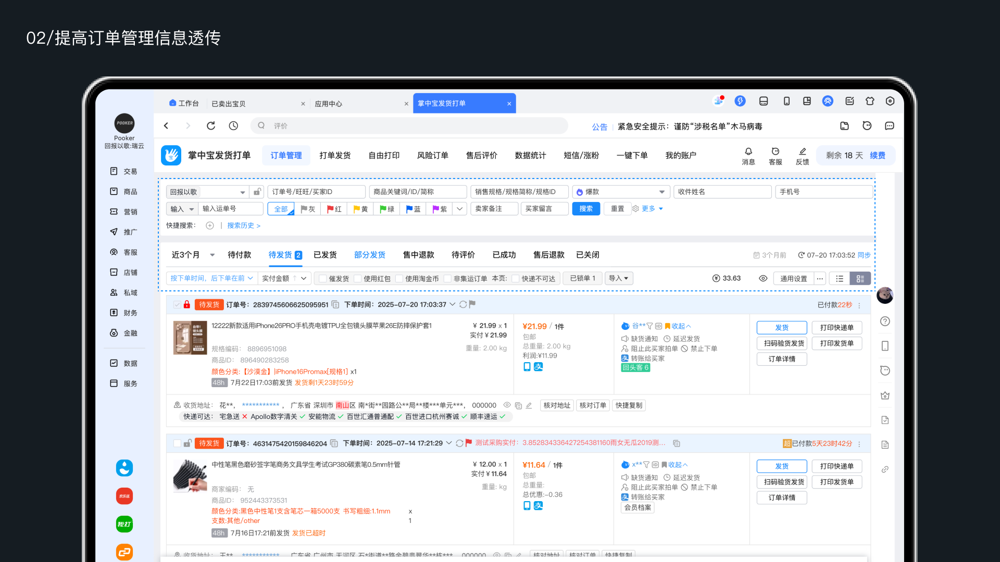
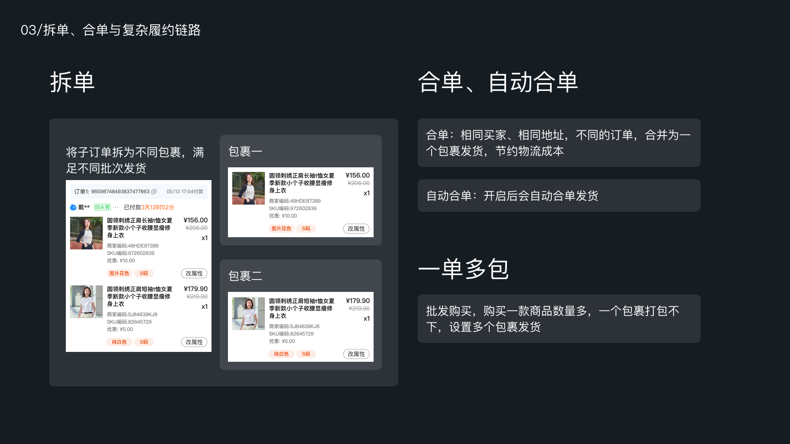
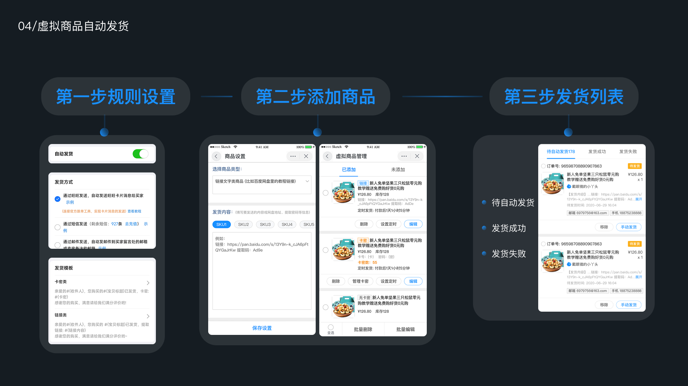
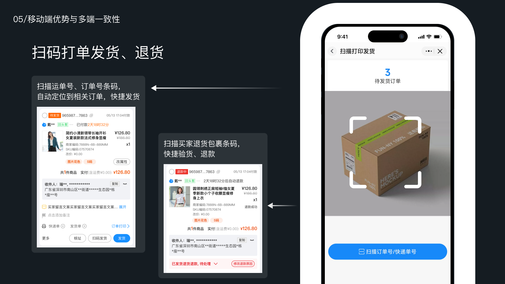
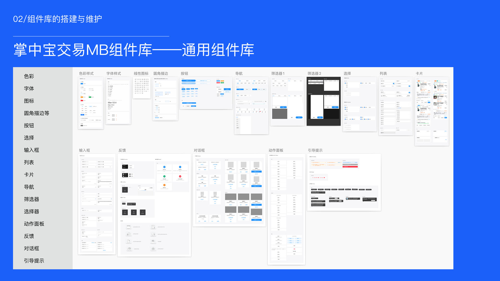
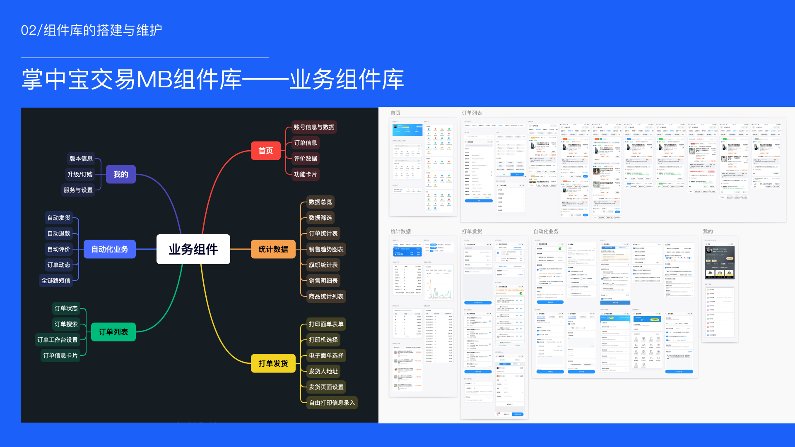
06 / Solution
我围绕订单履约主链路建立轻量 OMS 能力：通过搜索筛选和订单列表重构提升高频处理效率；通过履约单 / 包裹单模型支持拆单、合单、部分发货和多物流场景；通过虚拟商品自动发货挖掘差异化付费点；通过免费版、黄金版、白金版构建从获客、激活、转化到续费的商业化闭环。
case 1：搜索筛选优化研究方法：问卷、访谈、客服反馈、数据分析、竞品分析
关键策略
采用栅格化布局，优化订单信息显示，固定底部操作区，按钮分级，抽屉式设置窗口等优化策略，提升页面清晰度，提高操作效率。
订单列表从"信息展示页"升级为"订单处理工作台"。
case 3：拆单、合单与复杂履约链路重构针对多仓发货、库存不足、预售、代发及同一买家多次下单等复杂场景，重构订单履约模型，建立"交易单-履约单-包裹单"三层模型，通过履约单承接拆合单结果，解耦交易关系与实际发货关系。
拆单因子：仓库、库存、商品类型、预售状态、代发主体、物流方式、重量体积及售后状态。
合单因子：买家与收货信息、发货仓库、物流方式、发货时效、商品包装兼容性及包裹限制。
支持自动拆合单、系统推荐与人工调整三种模式，并提供规则配置、结果预览、冲突校验、操作锁定和全链路日志。
case 4：虚拟商品自动发货我通过商户群、客服反馈和业务观察，发现一类被平台基础工具覆盖不足、但商家付费意愿明确的场景：虚拟商品自动发货。
核心难点
技术受限，不具备旺旺窗口自动发送消息的技术权限。
推动权限申请与技术方案落地
我通过多轮和千牛小二沟通，最终得到可以申请追单小程序的发布来获得旺旺消息自动发放的权限。并和团队沟通，快速安排项目进程与分工。
商业价值
虚拟商品自动发货不是简单增加一个功能，而是在竞争同质化背景下创造了新的差异化付费点。虚拟商品商家高频使用、付费意愿强、续费粘性高。
核心判断
在同类产品移动端体验普遍较弱的背景下，移动端不是 PC 的简单缩小版，而是掌中宝交易可以建立差异化体验的场景。
关键方向
07 / Impact & Reach
产品成果
掌中宝交易最终实现 60W+ 用户、7.3W+ 付费用户、月12%付费转化率、65% 续费率，并成为公司核心业务的重要组成部分，所负责产品线营收约占公司核心业务约 30%。
工作成果
08 / Strategic Learnings
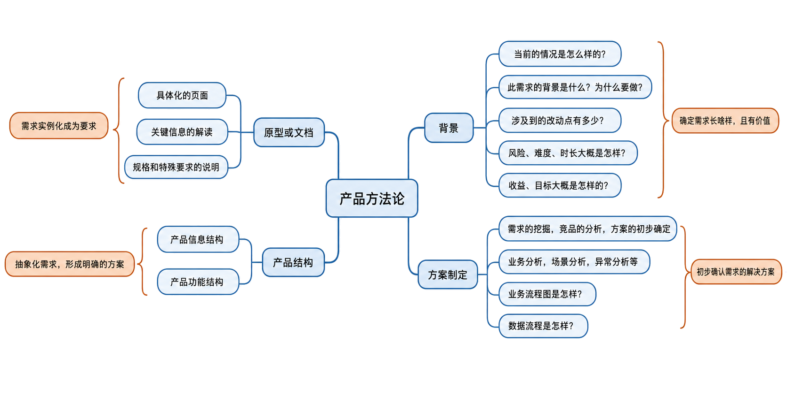